Ptaki w zbiorze treningowym: 7389
Drony w zbiorze treningowym: 10934
Ptaki w zbiorze walidacyjnym: 701
Drony w zbiorze walidacyjnym: 1039
Ptaki w zbiorze testowym: 361
Drony w zbiorze testowym: 528Odróżnianie od ptaków od dronów
1 Wstęp
Projekt dotyczy klasyfikacji (dron/ptak) obrazów pochodzących z: https://www.kaggle.com/datasets/stealthknight/bird-vs-drone, za pomocą konwolucyjnej sieci neuronowej zaimplementowanej za pomocą PyTorch. Zbiór był domyślnie podzielony na zbiór treningowy, testowy i walidacyjny (~18000, ~1700, 889), dodatkowo w podfolderach train, test, val znajdowały się również folder z plikami tekstowymi które zawierały informacje o położeniu ptaka lub dronu na obrazie za pomocą segmentacji YOLO.
2 Balans klas
Zbiór był zbalansowany pod względem liczności obu kategorii przy czym liczba dronów była nieznacząco wyższa w każdym podziale.
3 L1
3.1 Różne przestrzenie barw
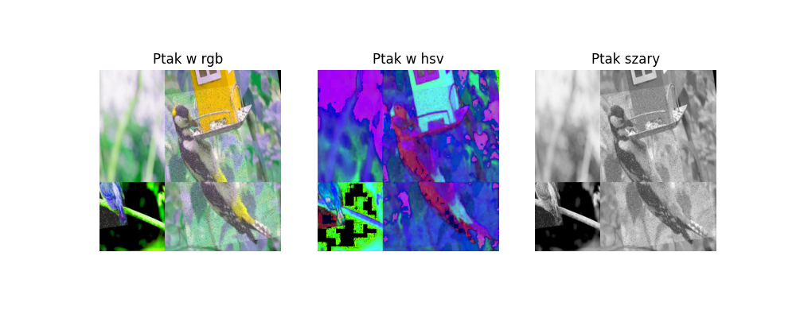
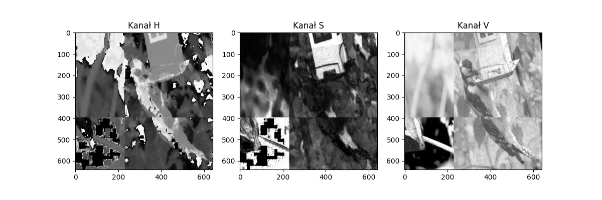
3.2 Kwantyzacja
Zredukowanie 256 poziomów jasności do 64,16,4
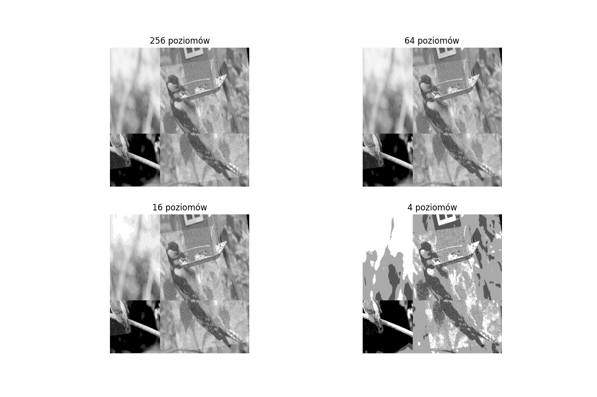
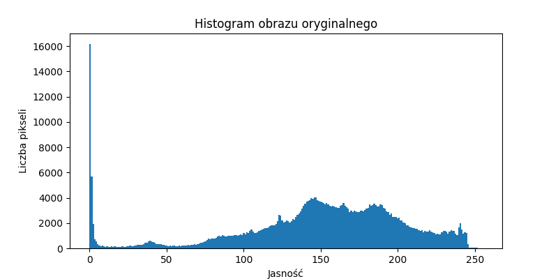
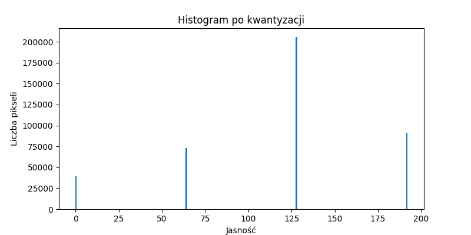
4 L2
4.1 Filtry
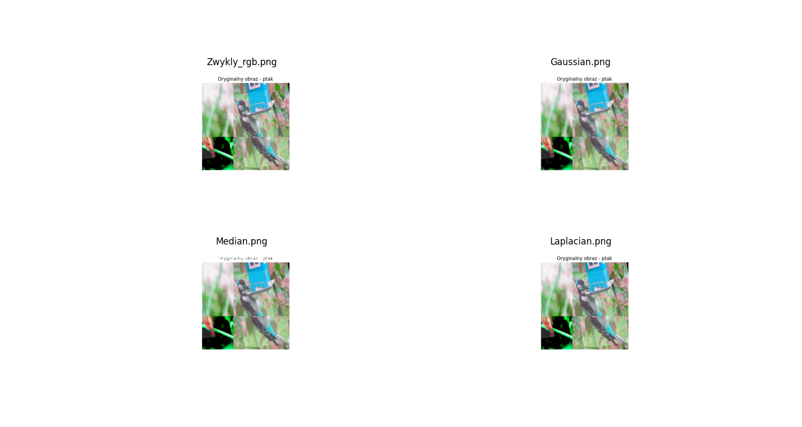
4.2 Transformacje

4.3 Progowanie
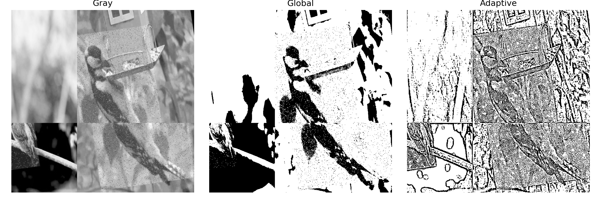
5 L3
5.1 Geometria
Obraz Klasa Pole powierzchni Obwód Aspect ratio Srodek ciezkosci
0 BTR (1).jpg Bird 0,0 283,48 0,65 [0 0]
1 BTR (10).jpg Bird 22659,0 842,98 0,46 [325 198]
2 BTR (100).jpg Bird 24152,5 898,2 0,35 [318 283]
3 BTR (1000).jpg Bird 19476,0 745,37 1,94 [136 43]
4 BTR (1001).jpg Bird 14427,5 650,37 0,56 [105 276]
5 BTR (1002).jpg Bird 12731,5 593,81 0,38 [ 36 290]
6 BTR (1003).jpg Bird 26556,5 993,2 0,61 [148 185]
7 BTR (1004).jpg Bird 0,0 340,78 0,51 [0 0]
8 BTR (1005).jpg Bird 12289,0 597,17 0,6 [121 113]
9 BTR (1006).jpg Bird 0,0 504,96 3,97 [0 0]5.2 Wizualizacja
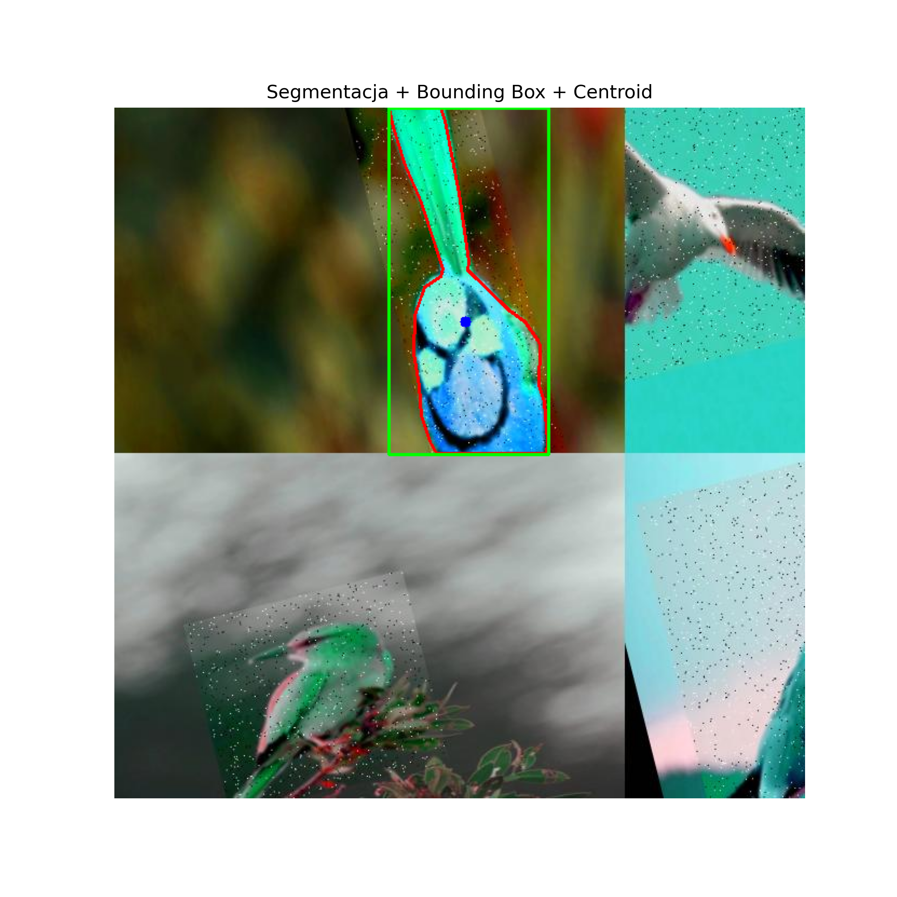
6 L5 – Implementacja konwolucyjnej sieci neuronowej
6.1 Przygotowanie danych
Przed rozpoczęciem procesu uczenia obrazy zostały poddane wstępnemu przetwarzaniu. Wszystkie obrazy zostały przeskalowane do rozdzielczości 64 × 64 piksele.
W celu zwiększenia zdolności modelu do generalizacji zastosowano augmentację danych obejmującą:
- losowe odbicie lustrzane,
- losowy obrót w zakresie ±15°,
- normalizację zakresu wartości pikseli do przedziału (0,1).
transform = transforms.Compose([
transforms.Resize((64,64)),
transforms.RandomHorizontalFlip(),
transforms.RandomRotation(15),
transforms.ToTensor()
])Do uczenia wykorzystano rozmiar próbki (batch size) równy 32.
train_loader = DataLoader(
train_dataset,
batch_size=32,
shuffle=True,
num_workers=0
)
val_loader = DataLoader(
val_dataset,
batch_size=32
)
test_loader = DataLoader(
test_dataset,
batch_size=32
)6.2 Architektura sieci CNN
Zaprojektowana sieć neuronowa składała się z dwóch warstw konwolucyjnych przedzielonych warstwami MaxPooling.
Pierwsza warstwa konwolucyjna przyjmowała trzy kanały wejściowe RGB i wykorzystywała 32 filtry o rozmiarze 3 × 3. Następnie zastosowano funkcję aktywacji ReLU oraz warstwę MaxPooling zmniejszającą rozmiar map cech.
Druga warstwa konwolucyjna przyjmowała 32 mapy cech jako wejście i wykorzystywała 64 filtry o rozmiarze 3 × 3. Po funkcji aktywacji ReLU ponownie zastosowano warstwę MaxPooling.
class CNN(nn.Module):
def __init__(self):
super().__init__()
self.conv = nn.Sequential(
nn.Conv2d(3,32,3),
nn.ReLU(),
nn.MaxPool2d(2),
nn.Conv2d(32,64,3),
nn.ReLU(),
nn.MaxPool2d(2)
)W części klasyfikacyjnej wykorzystano warstwę Adaptive Average Pooling, która sprowadzała każdą z 64 map cech do pojedynczej wartości średniej. Następnie dane były spłaszczane do jednowymiarowego wektora i przekazywane do warstw gęstych.
W celu ograniczenia zjawiska przeuczenia zastosowano warstwę Dropout o współczynniku 0,3.
self.fc = nn.Sequential(
nn.AdaptiveAvgPool2d((1, 1)),
nn.Flatten(),
nn.Dropout(0.3),
nn.Linear(64, 32),
nn.ReLU(),
nn.Linear(32, 2)
)Przepływ danych przez sieć był definiowany przez funkcję forward(), która najpierw przekazywała obraz przez część konwolucyjną, a następnie przez część klasyfikacyjną.
def forward(self, x):
x = self.conv(x)
x = self.fc(x)
return x6.3 Ocena modelu
Jako miary jakości klasyfikacji wykorzystano:
- Accuracy,
- Precision,
- Recall,
- F1-score.
Dodatkowo przedstawiono macierz pomyłek, krzywą ROC oraz wykresy zmian funkcji straty i dokładności na zbiorach treningowym i walidacyjnym.
W celu lepszej interpretacji działania modelu zaprezentowano również przykłady błędnie sklasyfikowanych obrazów.
6.4 Metryki podczas uczenia
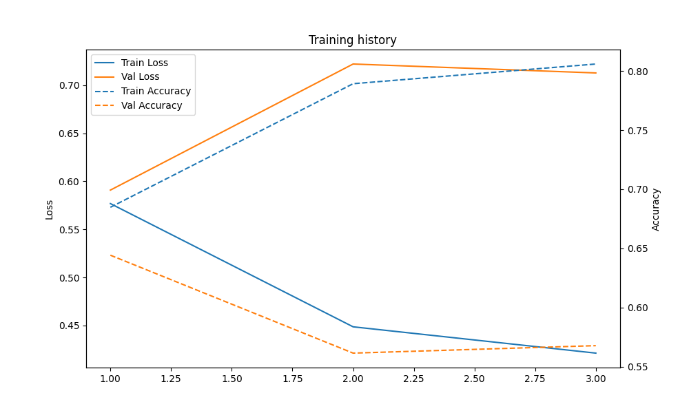
6.5 Metryki końcowe
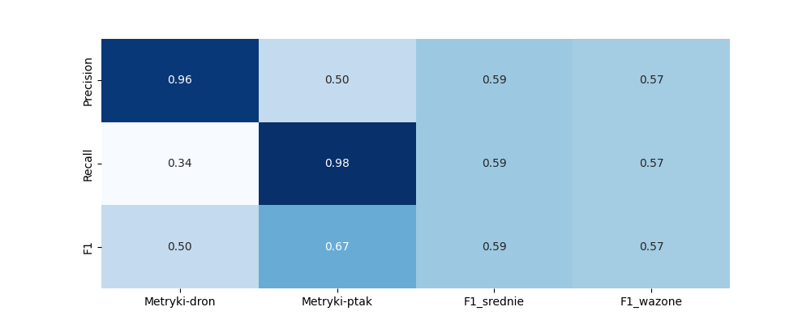
6.6 Macierz pomyłek
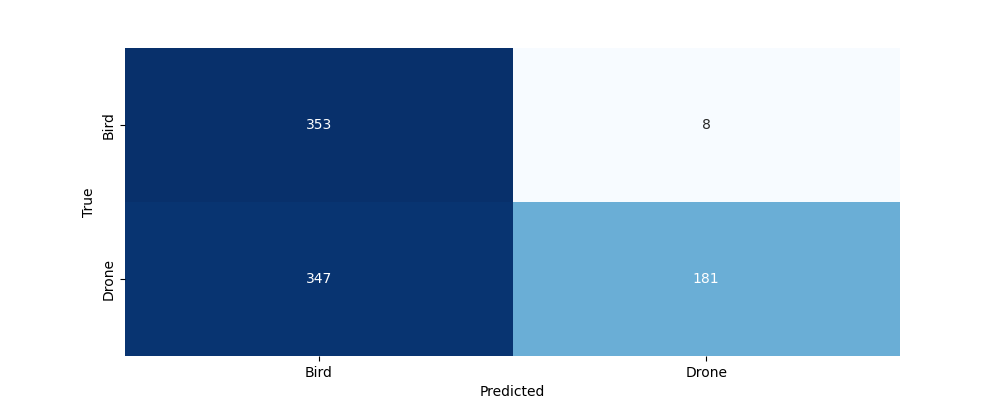
6.7 Krzywa ROC
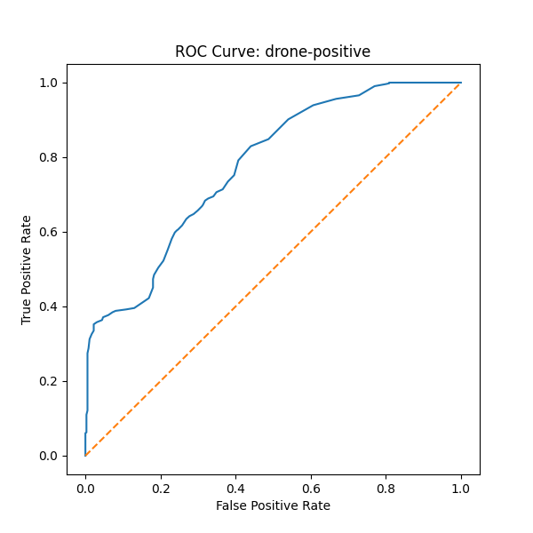
6.8 Przykłady błędnych klasyfikacji
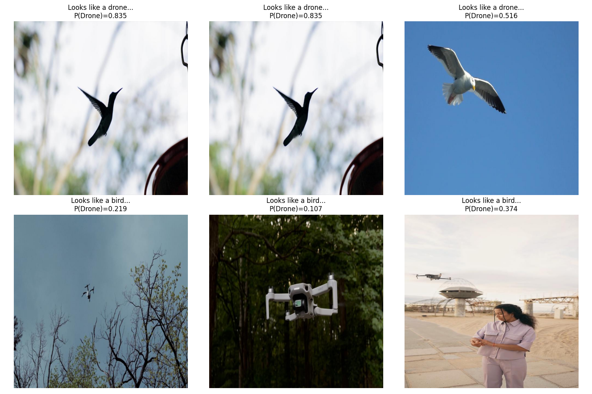